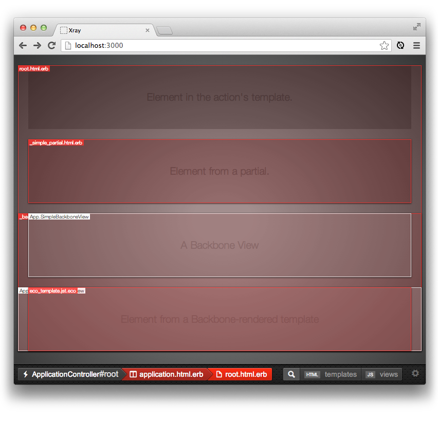

Rack
A brief introduction
A bit about me
-

-

- Ruby, iOS, Android, JS...
-
@joe_steele
github/joesteele
meetup/suncoast.js
Rack
What is Rack?
A minimal, modular, and adaptable interface for developing web applications in Ruby
What is Rack?
Wraps HTTP requests and responses in the simplest way possible to unify an API for web servers
Released in 2007
Inspired by frameworks like Python's WSGI
Where is it used?
If you have worked with any Ruby web frameworks, you've likely been using it.
Rails, Sinatra, Padrino, Merb, etc... (almost any Ruby framework out there)
What does it look like?
Obligatory Simplest Rack App
require 'rack'
run Proc.new {[200, {'Content-Type' => 'text/plain'}, ['Hello!']]}
What does it look like REALLY?
Well... that kind of IS it really. It's the abstractions that are built on top of that, which make Rack powerful.
What does it look like?
Obligatory Simplest Rack App (Part Deux!)
require 'rack'
class App
def call(env)
[200, {'Content-Type' => 'text/plain'}, ['Hello!']]
end
end
run App.new
What does it look like?
Breaking it down
[200, {'Content-Type' => 'text/plain'}, ['Hello!']]
[status, headers, body]
[int, hash, enumerable(just has to respond_to?(:each))]
class App
def call(env)
[200, {'Content-Type' => 'text/plain'}, ['Hello!']]
end
end
Proc.new {|env| [200, {'Content-Type' => 'text/plain'}, ['Hello!']] }
->(env) {[200, {'Content-Type' => 'text/plain'}, ['Hello!']] }
Demo
DEMO TIME!
Rack Specification
What Rack is more than anything else though is a clear and standard specification for working with HTTP requests.
Rack Specification
A Rack application is an Ruby object (not a class) that responds to call. It takes exactly one argument, the environment and returns an Array of exactly three values: The status, the headers, and the body.
How does that become Rails?
Rack's simple protocol allows you to compose powerful applications by stacking Rack apps and middlewares on top of each other.
Middlewares?
rake middleware
use Static
use Rack::Lock
use Rack::Runtime
use Rack::MethodOverride
use ActionDispatch::RequestId
use Rails::Rack::Logger
use ActionDispatch::ShowExceptions
use ActionDispatch::DebugExceptions
use ActionDispatch::RemoteIp
use ActionDispatch::Reloader
use ActionDispatch::Callbacks
use ActionDispatch::Cookies
use ActionDispatch::Session::CookieStore
use ActionDispatch::Flash
use ActionDispatch::ParamsParser
use Rack::Head
use Rack::ConditionalGet
use Rack::ETag
use OmniAuth::Builder
use BetterErrors::Middleware
run MyApp::Application.routes
Rack::Runtime
module Rack
class Runtime
def initialize(app, name = nil)
@app = app
@header_name = "X-Runtime"
@header_name << "-#{name}" if name
end
def call(env)
start_time = Time.now
status, headers, body = @app.call(env)
request_time = Time.now - start_time
if !headers.has_key?(@header_name)
headers[@header_name] = "%0.6f" % request_time
end
[status, headers, body]
end
end
end
Rack Middleware
Rack middleware differentiate themselves from Rack apps in that they take the next middleware or app on initialization (normally passed in and stored as @app) whereas Rack apps don't.
Rack Middleware
This let's the middleware wrap the request to potentially modify the request before passing it on to the next middleware/app as well as for the response on the way back.
Rack::Runtime
module Rack
class Runtime
def initialize(app, name = nil)
@app = app
@header_name = "X-Runtime"
@header_name << "-#{name}" if name
end
def call(env)
start_time = Time.now
status, headers, body = @app.call(env)
request_time = Time.now - start_time
if !headers.has_key?(@header_name)
headers[@header_name] = "%0.6f" % request_time
end
[status, headers, body]
end
end
end
Middleware Diagram
Rack Middleware
def call(env)
# do stuff to the request (env)
status, headers, body = @app.call(env)
# do stuff to the response (status, headers, body)
# pass the response back up the chain
[status, headers, body]
end
Rack::Runtime
module Rack
class Runtime
def initialize(app, name = nil)
@app = app
@header_name = "X-Runtime"
@header_name << "-#{name}" if name
end
def call(env)
start_time = Time.now # DOING STUFF BEFORE
status, headers, body = @app.call(env) # EXECUTING STUFF
# DOING STUFF AFTER
request_time = Time.now - start_time
if !headers.has_key?(@header_name)
headers[@header_name] = "%0.6f" % request_time
end
[status, headers, body] # RETURNING RESULTING STUFF
end
end
end
Modular Middlewares
Middlewares are generally interchangeable with any Rack app. You can take your Rails middleware to your Sinatra app and vice versa!
Available Middlewares
Tons... logging, authentication, timing, error tracking, ssl, view debugging... let me Github that for you...
X-Ray Rails
Rails View Middleware
Developed by github/brentd to help quickly open files associated with Rails controller, actions, views, as well as Backbone views.
X-Ray Rails
X-Ray Rails
You know this project is a good one, because it has some awesome contributors.
Complex Rack Apps
With even just these tools you might begin to see how you can create pretty complex apps with just what Rack provides you.
Complex Rack Apps
Let's try!
Demo App
What we're going to build
A Rack application to show a GitHub user's profile.
Demo App
Features of our simple Rack app
- Rack middleware
- Mounted Rack apps
- Static assets
- OAuth authentication via GitHub
- User sessions
- Template rendering
- Routing
- Our own mini web framework!
Demo App
What 3rd party gems we'll use to help us
-
omniauth
Rack middleware to do the OAuth dark-magic for us.
-
erubis
Gem to let us render ERB templates so we can easily show the data we get back inside our html.
-
rack
Everything else is just Rack!
Demo App
DEMO TIME!
Rack::Request
Wraps the "env" state bag
Rack::Request gives you access to all those goodies you love...
Rack::Request
request = Rack::Request.new(env)
request.get?
request.post?
request.body
request.ip
request.content_type
request.content_length
request.cookies
request.session
request.xhr?
# ...etc
Demo App
BACK TO DEMO!
Rack::Builder
Rack::Builder provides a way of combining various Rack middleware and apps together all in a nice DSL.
Rack::Builder
Rack::Builder.new do
use Rack::CommonLogger
use Rack::ShowExceptions
use MyCustomMiddleware
run MyRackApp.new
end
Rack::Builder
Rack::Builder.new do
use Rack::CommonLogger
map '/users' do
run UsersApp.new
end
map '/products' do
run ProductsApp.new
end
run MyRackApp.new
end
Demo App
BACK TO DEMO!
Thanks!
Come learn about web development, mobile development, and design on Treehouse!